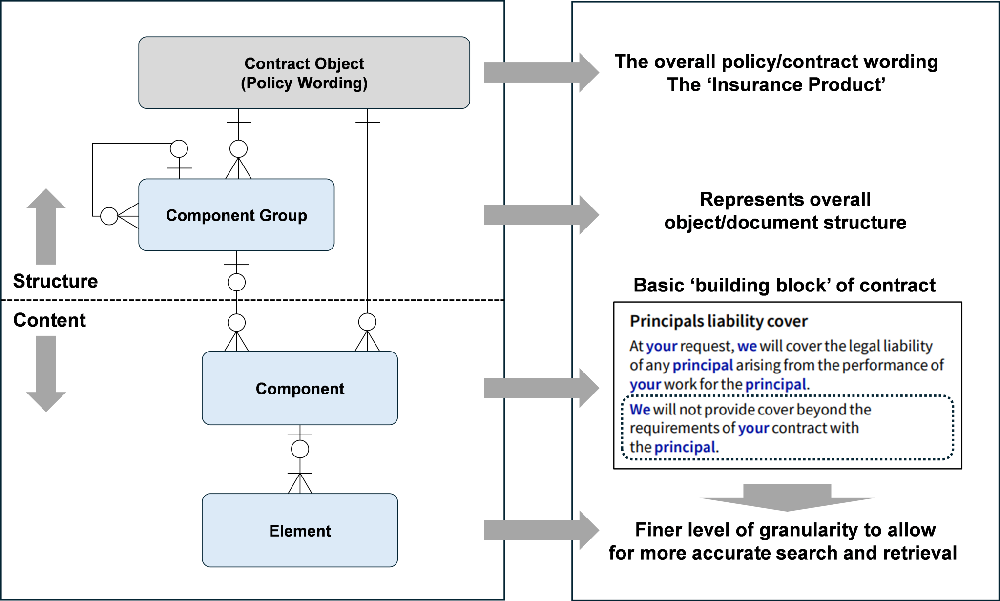

Modular Content Modelling for Insurance Contract Computability
Having outlined the path towards contract computability, as well as the basic functioning of insurance contracts, we can now look at abstract information modelling.
The process of modularisation (i.e. the breaking an insurance contract down into its constituent parts) is essential for the modelling of contracts. This important step may be assisted using an Entity Relationship Diagram (ERD) as indicated in Figure 4, “Representation of the Policy Wording using an Entity Relationship diagram.”.
The ERD might be considered as having two distinct parts: an upper part that is primarily concerned with the overall structure of the contract object through a series of nested ‘component groups’; and a lower part that is concerned more with the content (although there are structural considerations here too).
The lower, content-focussed part consists of ‘components’ and ‘elements’ (or sub-components). Components[20] represent the fundamental ‘building blocks’ of an insurance policy wording. And, within a taxonomy of components, the main types are definition components; coverage components; exclusion components and condition components (thus reflecting the earlier part of this document on the nature of insurance contracts). The element level (beneath the component level) essentially allows for a finer granularity of typing. In Figure 4, “Representation of the Policy Wording using an Entity Relationship diagram.”, we see that a coverage component has two statements: a coverage statement and an exclusion statement, which can be modelled by typing the elements in a similar fashion to components. This finer level of granularity allows for a greater level of semantic enrichment, which in turn can support a more refined set of tasks for searching and retrieval.
Figure 4. Representation of the Policy Wording using an Entity Relationship diagram.
 |
Within the components (or elements), a body of text may take the form of a ‘composite construct’. A simple example might be the phrase ‘a maximum of £50,000 any one claim’ to limit the level of indemnification. This construct would have a type (e.g. a limit, deductible or excess) with four parts where the nature of the language used is based on industry standard terms and phrases:
An initial phrase – ‘a maximum of’;
A currency – in this case GBP;
A value – in this case, 50,000; and
A final phrase – ‘any one claim’.
Embedded variables may be used within components (and may also be part of the composite constructs shown above). The value for a variable could be the limit for a particular coverage e.g. damage due to flooding.
It should be noted that the ERD has been used to model a single contract; in reality, there may be several tens of policy wordings within the overall insurance product estate, thereby changing the cardinality for the contract object from ‘one’ to ‘one to many’, in respect of both components and component groups.
In the policy wording snippet (shown in Figure 5, “Policy wording snippet showing cross-referencing and nesting within a component.”), an example of nesting within a component is shown. Examples with five (or even six) levels of nesting are not uncommon. The example also shows several examples of cross-referencing, both for defined terms (which are modelled as components) and for referencing another part of the contract object.
Figure 5. Policy wording snippet showing cross-referencing and nesting within a component.
 |